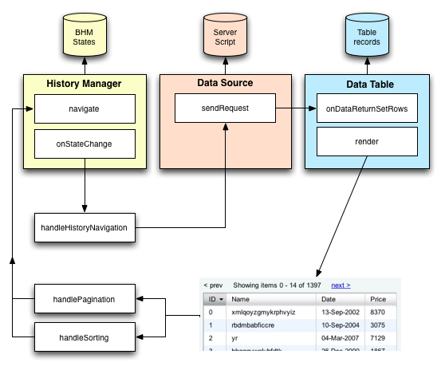

YUI Library Examples: DataTable Control: Integrating Browser History Manager with Server-side Pagination and Sorting
DataTable Control: Integrating Browser History Manager with Server-side Pagination and Sorting
This example combines server-side pagination and sorting with the Browser History Manager for the ability to bookmark states.
Code for this example
This example contacts a server side script to get the records appropriate for display in the DataTable according to the requested sort order and page. Additionally, each change of page or sort order will be added to the Browser History Manager, allowing bookmarking and the use of the browser's back/forward buttons to navigate through states of the DataTable.
The data
The server-side script delivering the DataTable's records will send the data in the following JSON format:
The markup
CSS
The Browser History Manager markup requires an iframe to support IE6. This is hidden via CSS per the recommendation.
Workflow
To integrate the Browser History Manager with DataTable pagination and sorting, we need to create a few custom functions and insert them into the normal flow of operations. Here's a diagram of how the code below will operate (note the methods in floating boxes are our custom functions):
Javascript
First we set up the DataTable with server-side sorting and pagination, including creation of all dependencies, like a DataSource instance and Paginator instance.
The following code integrates the DataTable with the Browser History Manager, which we'll use to remember "states". We'll use the request sent to the server script as the state indicator and custom pagination and sorting handlers to generate new states and pass them to the BHM's navigate method. The handleHistoryNavigation handler will take over from there.
Configuration for This Example
You can load the necessary JavaScript and CSS for this example from Yahoo's servers. Click here to load the YUI Dependency Configurator with all of this example's dependencies preconfigured.
YUI Logger Output:
Note: Logging and debugging is currently turned off for this example.
DataTable Control Examples:
- Basic Example
- Progressive Enhancement
- Custom Cell Formatting
- Conditional row coloring
- Nested Headers
- JSON Data Over XHR
- XML Data Over XHR With POST
- XML Data with XPath
- Textual Data Over XHR
- Polling the DataSource
- Adding, Updating, and Deleting Rows
- Client-side Pagination
- Client-side Sorting
- Server-side Pagination and Sorting for Dynamic Data
- Integrating Browser History Manager with Server-side Pagination and Sorting
- XY-scrolling, Y-scrolling, and X-scrolling
- Row Selection
- Cell Selection
- Inline Cell Editing
- Showing, Hiding, and Reordering Columns.
- Highlighting Cells, Rows, or Columns
- Reorder Rows with Drag and Drop
- Row Expansion
- Context Menu Integration
- Configuring the Paginator (included with examples for Paginator)
- TabView Integration
- Complex Example of Multiple Features
- Client-side Filtering of Local Data
- Filtering of Dynamic Data
- Datatable with Autocomplete
- Skinning Model
- Ratings (included with examples for ProgressBar Control)
- YQLDataSource (included with examples for DataSource Utility)
- Complex Application (included with examples for Layout Manager)
More DataTable Control Resources:
- User's Guide (external)
- API Documentation
- Cheat Sheet PDF (external)
- Yahoo! UI Library
- Home (external)
- YUIBlog (external)
- YUI Discussion Forum (external)
- YUI on GitHub
- API Documentation
- Functional Examples
- YUI Theater (external)
- YUI License (external)
- YUI Functional Examples
- Animation
- AutoComplete
- Browser History Manager
- Button
- Calendar
- Carousel
- Charts
- Color Picker
- Cookie
- Connection Manager
- Container
- DataTable
- Dom
- Drag & Drop
- Event
- Get
- ImageCropper
- ImageLoader
- JSON
- Layout Manager
- Logger
- Menu
- Paginator
- Profiler
- ProfilerViewer
- ProgressBar
- Resize
- Rich Text Editor
- Selector
- Slider
- Storage
- SWF
- SWFStore
- Stylesheet
- TabView
- TreeView
- Uploader (experimental)
- YAHOO Global Object
- YUI Loader
- YUI Test
- Reset CSS
- Base CSS
- Fonts CSS
- Grids CSS
- YUI Articles on the YUI Website
- YUI FAQ (external)
- Graded Browser Support (external)
- Bug Reports/Feature Requests (external)
- Serving YUI Files from Yahoo! (external)
- Security Best Practices (external)
Copyright © 2009 Yahoo! Inc. All rights reserved.
Privacy Policy - Terms of Service - Copyright Policy - Job Openings